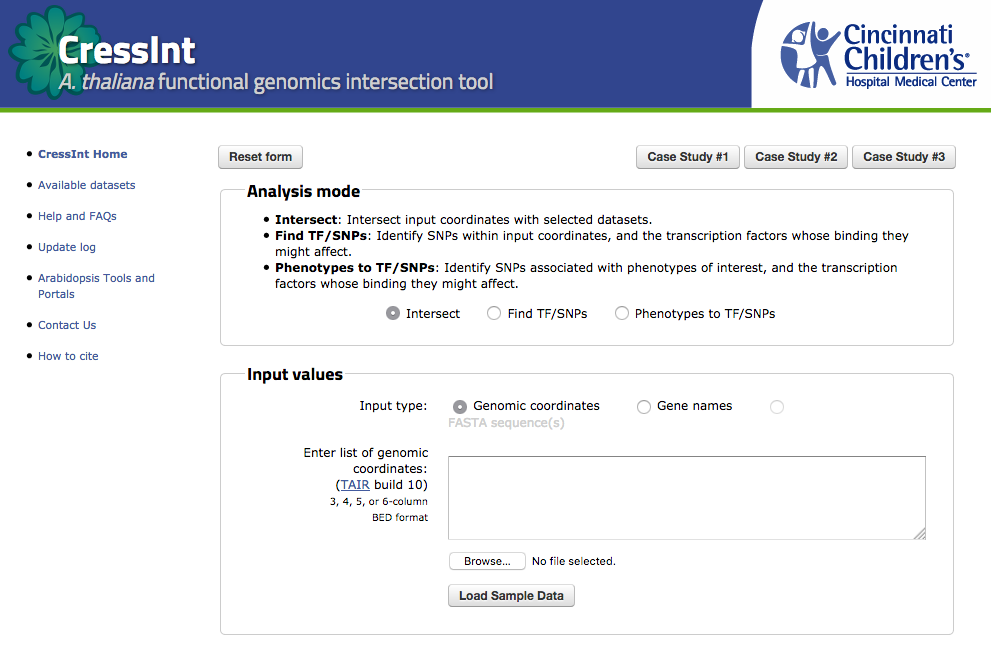

Bioreactor
A framework for constructing web-based bioinformatics analysis tools
Ben Albert • Brad Arvin • Juanita Dickhaus • Kevin Ernst
Weirauch Transcription Factor Research Lab
Cincinnati Children's Hospital Medical Center
Center for Autoimmune Genomics and Etiology
Project Goals
The primary goal of the project is to create a web-based bioinformatics analysis tool for investigating interactions between human and viral DNA sequences and proteins.
As such, it has the potential to directly benefit research into the genetic origins of a certain class of diseases by illuminating the role of viral DNA/protein interactions with disease-associated regions of the human genome.
Designing a reusable solution
It's a common use case for bioinformaticicans to want to create web interfaces for their tools, so that non-Unixy collaborators can use them.
"Instead of attacking isolated problems, I made the resolution that I would never again solve an isolated problem except as characteristic of a class."
—Richard Hamming (1915 – 1998)
…and so:
In the design of the analysis tool, we intend to produce a modular application framework, designed in such a way as to facilitate code re-use, addressing a more general class of problem: quickly adding a web interface on top of an existing bioinformatics analysis pipeline.
The Team
Computer Science undergraduates
at the University of
Cincinnati
- Brad: 5th year
- Ben: 5th year
- Juanita: 4th year
- Kevin: ∞ year
We are collaborating with Dr. Matt Weirauch
at Cincinnati Children's Hospital
Our faculty advisor is Dr. Karen Davis
The Weirauch Lab
The Weirauch Lab studies mechanisms of gene transcriptional regulation, with a focus on transcription factors
and how they relate to the origins of autoimmune diseases in humans (e.g., rheumatoid arthritis and systemic lupus erythematosus)
We are between 3 and 8 people, depending on the season
Bioinfo-wat?
Crick's "Central Dogma"

"Functional genomics"
It's a field of molecular biology that draws insight from whole-genome sequencing data (e.g., from the Human Genome Project)
…to describe gene and protein interactions, and their functions within an organism.
Prior Art
CressInt: a genomics coordinate intersection tool for plant biologists
- accepts BED format coordinates or gene names (FASTA input still in progress)
- intersects input coordinates with several dozen data sets to identify "regions of interest"
Which looks like
"Regions of Interest"
CressInt incorporates a variety of genome-wide data types relevant to gene regulation, including transcription factor (TF) binding site models, ChIP-seq, DNase-seq, eQTLs, and GWAS.
Source: CressInt FAQ
BED file format
Tab-delimited format which describes locations within chromosomes of regions of interest.
chr1 11873 14409 uc001aaa.3 0
Specification describes up to 6 columns (BED6):
chr, start, stop, label, score, and strand (+/-)
Architecture
(we're talking about Bioreactor again here)
Input validation / submission
The analysis has has tunable parameters, some of which are
queried from REST endpoints on the server
(noun-like and
verb-like web APIs)

Retrieval and visualization
Results of the analysis can be displayed in tabular form, downloaded, or visualized graphically as a sequence logo.
{kind=link}

Plumbing

Plumbing (cont'd)
Input and analysis parameter selection

Plumbing (cont'd)
Display, visualize, or download results

REST APIs & cluster interface
(REST: Representational State Transfer)
Interface Design
User workflow overview
{kind=link}
User Interface
"First-launch" help, data input, and parameter selection UI
{kind=link}
Progress so far…
A big chunk of the effort was getting a common development environment for the team to work on
$ git clone git@github.uc.edu:Bioreactor/bioreactor-vm.git
$ vagrant box add bioreactor http://url.to/bioreactor.box
$ vagrant up
We chose Vagrant to manage the VM environment, and Ansible for automated software installation and configuration
VM dev environment
- the VM "base box" is created from a Debian Jessie ISO using veewee
- base box includes only essential packages
- Vagrant creates a new VirtualBox VM from the base box
- and handles SSH key generation / exchange and port forwarding to the host OS
- Ansible installs remaining packages for a base Python dev environment
- with Apache for serving static files
There's a public starter repository on GitHub if your team is in a similar situation.
Running Bioreactor
Bioreactor is built with Python and the Flask web framework
The automatic setup ("provisioning") process for the VM clones the web application repository, but doesn't actually launch it (yet)
Here's how you'd do that:
cd /path/to/where/you/cloned/bioreactor
# create a "virtual environment" for our dependencies
virtualenv venv
source venv/bin/activate
# install the dependencies using the virtualenv's copy of 'pip'
pip install -r requirements.txt
# Initialize the database tables and launch the Flask dev server
export FLASK_APP=bioreactor/bioreactor.py
flask initdb
flask run
cd /path/to/where/you/cloned/bioreactor
# create a "virtual environment" for our dependencies
virtualenv venv
source venv/bin/activate
# install the dependencies using the virtualenv's copy of 'pip'
pip install -r requirements.txt
# Initialize the database tables and launch the Flask dev server
export FLASK_APP=bioreactor/bioreactor.py
flask initdb
flask run
And here's what that looks like...
(with help from PythonAnywhere)
Responsibilities
Brad
- front-end design and interaction with APIs
- stretch goal: web-based administrative back end
Ben
- deferred work queue and email notifications
- stretch goal: logging and benchmarking
Responsibilities (cont'd)
Juanita
- REST APIs for retrieving available datasets and job status
- stretch goal: sequence logo visualizations
Kevin
- class-based HPC cluster interface
- stretch goal: command-line management (housekeeping) tools
Future Directions
- Sharing within a group of collaborators (w/ ability to leave comments)
- Unit testing and application health monitoring
- Rate limiting / throttling based on user "class"
- Improved logging & user analytics
- Distribute Bioreactor as a Docker container
- (Really out there) semi-automated first-launch setup
Credits
The Weirauch Lab Team
The following people contributed to CressInt's development- Dr. Matthew Weirauch - Principal Investigator
- Dr. Xiaoting Chen - Lead Programmer / Analyst
- Kevin Ernst - developer / sysadmin
- Frances Soman - code contributor
- Dr. Michael Borowczak - BedInt author; technical advisor
Credits (cont'd)
Images
- Flickr user blueridgekitties
- Flickr user Science and Plants for Schools
- Institut national de la recherche agronomique (INRA)
- Wikimedia Commons
Links
- CressInt public web site
- CressInt: A user-friendly web resource for genome-scale exploration of gene regulation in Arabidopsis thaliana - Current Plant Biology, Sep 2015
- Weirauch Lab
- Center for Autoimmune Genomics and Etiology
- Children's Hospital Medical Center (research home page)
THE END
Thanks for your kind attention.
…and here's a fluffy kitten: